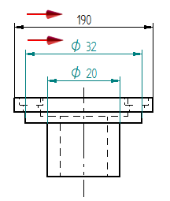

Terminator and Symbol tab (Dimension Style and Dimension Properties)
Sets terminator and symbol options for dimensions and annotations. The Terminator and Symbol tab is available in the Dimension Style dialog box and in the Dimension Properties dialog box.
- Terminator
-
Sets options for terminators.
- Display
-
Controls the display of terminators on dimensions. Options are None, Origin, Measurement, or Both.
Note:Another way to control the display of a selected terminator is using the Terminator Type command on the dimension formatting menu, which is displayed when you click the terminator handle of a dimension. For more information, see Set terminator size and shape.
- Measure type
-
Sets the end terminator type for linear dimensions.
- Measure size
-
Sets the size of the end terminator. The value is a ratio of the text size.
Note:Setting the Measure Size for the end terminator also sets the Origin Size for the start terminator to the same value. To use a different start terminator size, change the Origin Size after changing the Measure Size.
- Origin type
-
Sets the start terminator type for the origin of a linear dimension.
- Origin size
-
Sets the size of the start terminator. The value is a ratio of the text size.
Note:Setting the Measure Size for the end terminator also sets the Origin Size for the start terminator to the same value. To use a different start terminator size, change the Origin Size after changing the Measure Size.
- Free-space type
-
Sets the terminator type for an annotation whose terminator is placed in free space.
- Datum frame terminator type
-
Sets the terminator type for datum frames.
Datum frame terminator type
Displays
Anchor (filled)
Anchor (hollow)
Line
Normal
Uses the active terminator type for dimensions, for example:
- Datum frame terminator gap
-
Sets the terminator gap for datum frames. The default unit varies, depending on the selected standard.
- Datum frame terminator line width
-
Specifies the terminator width when the Datum frame terminator type is set to Line.
The default width is the Width on the Lines and Coordinates tab in the Dimension Style dialog box.
- Datum target terminator type
-
Sets the terminator type for datum targets.
Datum target terminator type
Displays
Arrow (filled)
Arrow (hollow)
Arrow (open)
Blank
No symbol is displayed on the terminator line.
- Inside limit
-
Sets the inside limit for the terminator. The value is a ratio of the dimension text size. This setting controls when the terminators are displayed on the outside of the projection lines.
- Symbol
-
Sets options for symbols in dimensions.
- Placement
-
Sets the placement position for the symbol on diameter and radial dimensions and linear dimensions for an arc. You can place the symbol before or after the dimension. You can also hide the symbol.
- Not to scale
-
Displays an underline, zigzag, or no indicator on driven dimensions with overridden values. You can use the zigzag option only on linear dimensions. You can override a driven dimension value by typing a new value in the value edit box on a dimension command bar.
- Suppress diameter
-
Suppresses the diameter symbol on diameter dimensions placed with the Smart Dimension command.
- Suppress symmetric diameter
-
Suppresses the diameter symbol on symmetric diameter dimensions placed with the Symmetric Diameter command.
Example:The diameter symbol is suppressed in symmetric diameter dimension 190, but not in symmetric diameter dimension 32.

- All Around Symbol
-
Size
Specifies the diameter of the all around symbol as a multiplier of the text size. The default is 1.0.
Look up more details
Dimension Properties dialog boxGeneral tab (Dimension Style and Dimension Properties)
Units tab (Dimension Style and Dimension Properties)
Secondary Units tab (Dimension Style and Dimension Properties)
Text tab (Dimension Style and Dimension Properties)
Lines and Coordinate tab (Dimension Style and Dimension Properties)
Spacing tab (Dimension Style and Dimension Properties)
Smart Depth tab (Dimension Style, Dimension Properties)
Annotation tab (Dimension Style and Dimension Properties)
Feature Callout tab